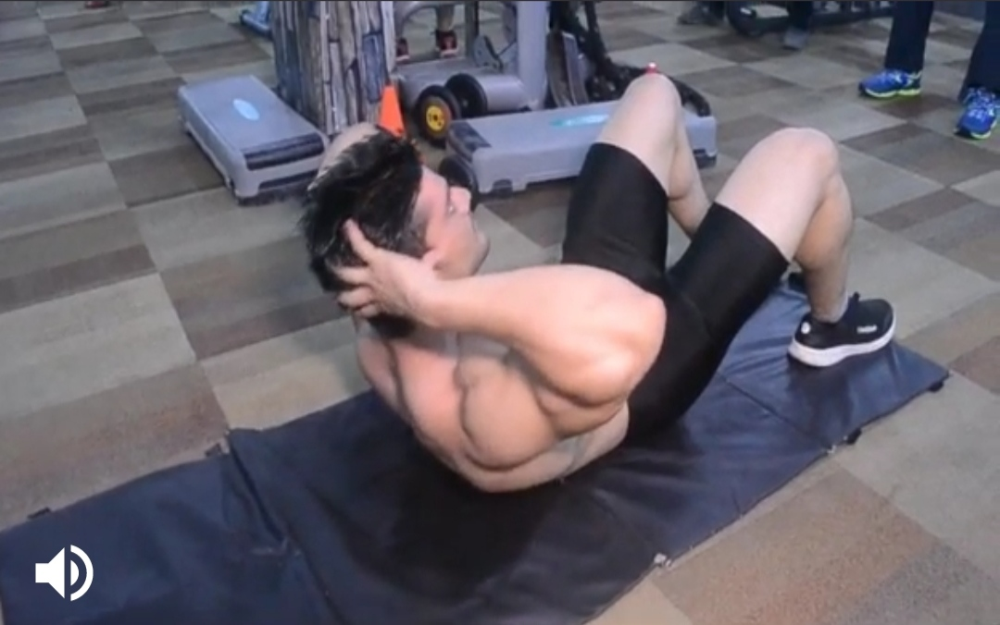
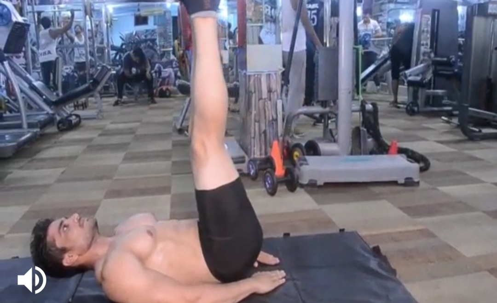
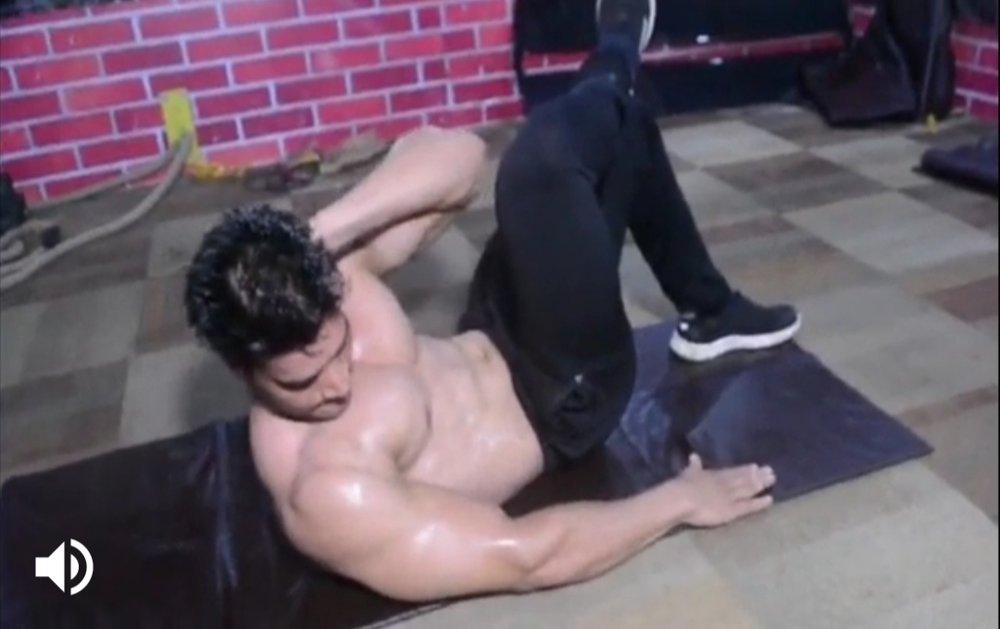
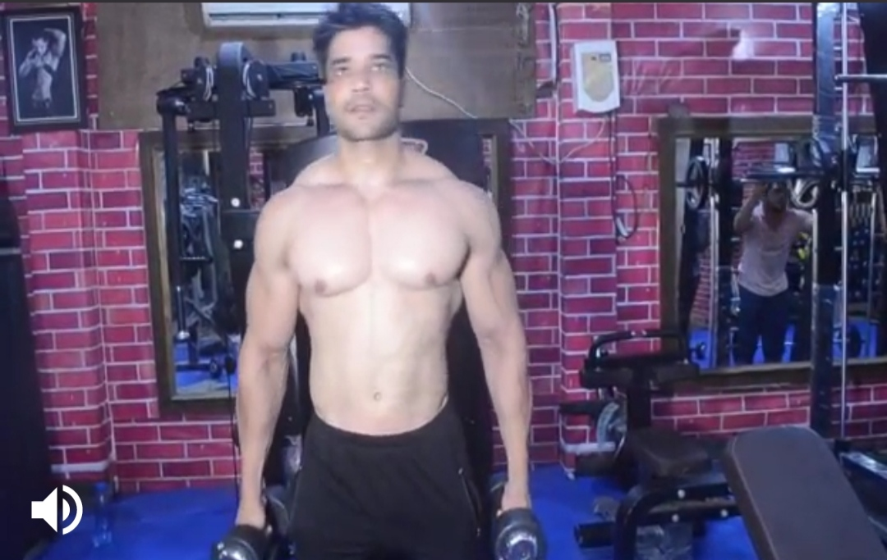

Crunches
Body Parts:Abs
Description:
1)Lie on the floor face up, with your knees bent and your feet on the floor. Place your hands behind our head.
2)Slowely curl your torso abd risebyour shoulder and back from the floor, wiyh your shoulders moving towards your thighs.
3) Hold this position for a moment, constracing you abs and slowely return to the starting positions.
-----------------------------------------------------------------------------------------------------------------------------------------------------------------

Plank
Body part:Abs
Description
1) This is what most people consider to be a standard plank. Lie facedown with legs extended and elbows bent and directly under shoulders;
clasp your hands.Feet should be hip-width apart, and elbows should be shoulder-width apart.
2) Contract your abs, then tuck your toes to lift your body (forearms remain on the ground); you should be in a straight line from head to heels.
---------------------------------------------------------------------------------------------------------------------------------------------------------------------------------------


Leg Rises
Body part:Abs
Description
1) Lie on a flat bench face up. Grasp the bench above your head for support. Bend your knees a little and keep them in a fixed position throughout the exercise.
2) Raise your legs up until they are almost perpendicular to the floor.
3) Hold this position for a moment, contacting your abs, and slowly return to the starting position.
-------------------------------------------------------------------------------------------------------------------------------------------------------------------------------


Twist Crunch
Body parts:Abs
Description
1) Lie on your back with knees bent.
2) place your right foot on your left knee and raise your upper body towards the right knee.
3) Your left hand should be placed on the back of your heaad.
4) Bring back your head down slowly. repeat this with alternate position with left leg placed on right knee.
-------------------------------------------------------------------------------------------------------------------------------------------------------------------------------------------



Dumbbell side Bends
Body part:Abs
Description
1) Hold a dumbbell with one hand along the side of your body.
2) Tilt your upper body to the side that holds the dumbbell and bring it back after a short pause. Complete your set and change sides.
3) Be careful not to tilt your upper body too far sideways where it may be difficult to bring it back.